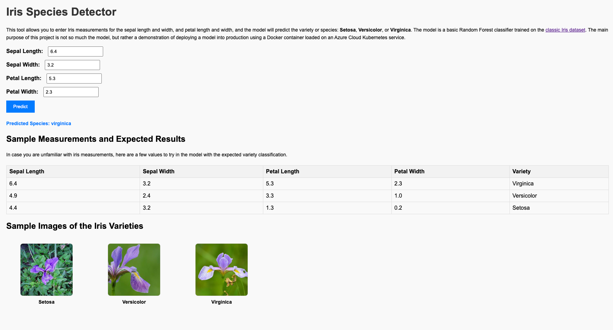
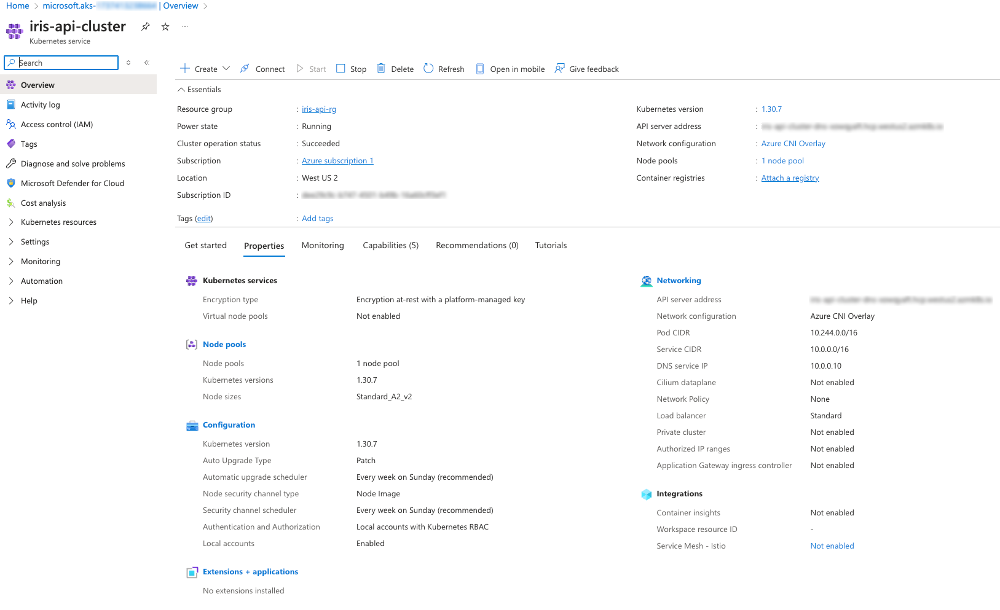

This project demonstrates the deployment of a simple machine learning model trained on the Iris dataset using Flask, Docker, and Kubernetes on Azure. Users can input measurements to predict the iris species (Setosa, Versicolor, or Virginica).
Iris Species Detector Application
Note: application might not remain up depending on cost to keep the service running on Azure.
Below is a screenshot of the Iris Species Predictor application in action:
Below is a screenshot of the Kubernetes service configure in Azure:
These are the steps to deploy the application:
docker build -t beecher92099/iris-api:latest .
docker push beecher92099/iris-api:latest
kubectl apply -f deployment.yaml
kubectl rollout status deployment/iris-api
kubectl get service iris-api-service
import numpy as np
import pandas as pd
from sklearn.datasets import load_iris
from sklearn.ensemble import RandomForestClassifier
from sklearn.model_selection import train_test_split
import joblib
# Load the Iris dataset
data = load_iris()
X = data.data
y = data.target
# Split into training and testing sets
X_train, X_test, y_train, y_test = train_test_split(X, y, test_size=0.2, random_state=42)
# Train the Random Forest model
model = RandomForestClassifier(n_estimators=100, random_state=42)
model.fit(X_train, y_train)
# Save the model
joblib.dump(model, 'iris_model.pkl')
print("Model trained and saved as 'iris_model.pkl'")
from flask import Flask, request, jsonify
import joblib
app = Flask(__name__)
# Load the model
model = joblib.load('iris_model.pkl')
@app.route('/predict', methods=['POST'])
def predict():
data = request.json
features = [[data['sepal_length'], data['sepal_width'], data['petal_length'], data['petal_width']]]
prediction = model.predict(features)
species = ['Setosa', 'Versicolor', 'Virginica'][prediction[0]]
return jsonify({'species': species})
if __name__ == '__main__':
app.run(host='0.0.0.0', port=5000, debug=True)
# Use an official Python runtime as the base image
FROM python:3.8-slim
# Set the working directory in the container
WORKDIR /app
# Copy the requirements file and application code
COPY requirements.txt .
COPY app.py .
COPY iris_model.pkl .
# Install dependencies
RUN pip install --no-cache-dir -r requirements.txt
# Expose the port Flask runs on
EXPOSE 5000
# Command to run the application
CMD ["python", "app.py"]
Flask
numpy
scikit-learn==1.3.0
joblib
apiVersion: apps/v1
kind: Deployment
metadata:
name: iris-api
spec:
replicas: 2
selector:
matchLabels:
app: iris-api
template:
metadata:
labels:
app: iris-api
spec:
containers:
- name: iris-api
image: beecher92099/iris-api:latest
imagePullPolicy: Always
ports:
- containerPort: 5000
---
apiVersion: v1
kind: Service
metadata:
name: iris-api-service
spec:
type: LoadBalancer
selector:
app: iris-api
ports:
- protocol: TCP
port: 80
targetPort: 5000